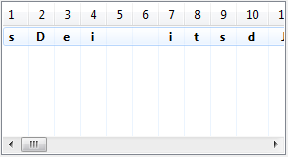
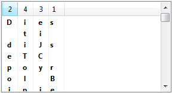
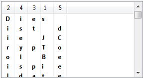
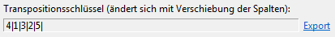
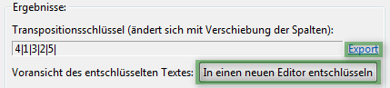
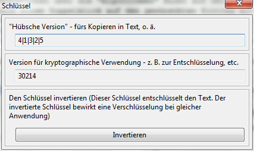

Das Plug-in "Transpositions-Analyse" soll bei der Entzifferung eines Geheimtextes helfen, welcher mit dem einfachen Transpositionsverfahren verschlüsselt wurde.
Die einfache Transpositions-Verschlüsselung benötigt einen Schlüssel der Länge n, welcher eine Vorschrift zur Umsortierung der der Zeichen in einem Text derselben Länge n beschreibt. Typischerweise schreibt man einen solchen Schlüssel als Reihenfolge der umsortierten Zeichen.
Beispielsweise:
Schlüssel = "1 | 4 | 3 | 2 |"
Klartextwort = "TEST"
Verschlüsseltes Wort = "TTSE"
Diese Umsortierung wird auf einen ganzen Text angewandt, indem dieser in Blöcke der Länge n geteilt wird, und jeder Block einzeln verschlüsselt wird.
Mehr zur Transpositions-Verschlüsselung enthält das Kryptologie-Anwenderhandbuch.
Die Blocklänge ist also gleich der Schlüssellänge. Da jeder Block des Geheimtextes gleichlang ist, und in gleicher Weise verschlüsselt wird, ist es hilfreich, die Block- bzw. Schlüssellänge zu wissen. Ist diese bekannt, so schreibt man den Text in diesen Blöcken untereinander, und versucht, die Reihenfolge der Zeichen wiederherzustellen. Hat man die richtige Reihenfolge für eine Zeile des untereinandergeschriebenen Textes gefunden, so hat man sie für alle Zeilen gefunden - jede Zeile repräsentiert einen Block, und jeder Block wird gleichermaßen verschlüsselt.
Neben dieser rein manuellen Herangehensweise gibt es eine Zahl an algorithmischen Methoden, um die Schlüssellänge oder einzelne Schlüsselpositionen zu ermitteln. Zum Beispiel werden bei der Unterteilung des Textes in Blöcke die letzten Stellen meist aufgefüllt, da der Text in dem meisten Fällen nicht genau auf die Blocklänge passt. Diese auffüllenden Zeichen nennt man das Padding des Klartextes. Dieses Padding kann Aufschluss über Schlüsselpositionen geben, und über die Schlüssellänge, denn die Länge des Geheimtextes muss ein Vielfaches der Schlüssellänge (=Blocklänge) sein. Weitere Herangehensweisen: Häufigste Zeichenpaare/Zeichentripel finden, Mehrfaches Auftreten desselben Geheimtextstückes, etc.
Das Transpositions-Analyse-Plug-in übernimmt die Aufteilung des Geheimtextes in Spalten und Zeilen, und ermöglicht die Umsortierung der Spalten des Textes. Der Text wird in einer Tabelle angeordnet, deren Spalten sich umsortieren lassen. Damit ist das Austesten verschiedener Blocklängen und Schlüsselworte ein Leichtes, und das Ziel ist, in der Tabelle schlussendlich den Klartext stehen zu sehen.
Das Transpositions-Plug-in bietet zurzeit die rein manuelle Entzifferung - Umsortierung der Spalten, bis ein "sinnmachender" Text in der Tabelle steht. Es sind jedoch auch halbautomatische und automatische Analysemöglichkeiten in Arbeit.
Die Hauptansicht der Transpositions-Analyse besteht aus zwei Spalten. Auf der linken Seite sind die Steuerelemente. Auf der rechten Seite sind einige Instruktionen, und die Zusammenfassung der durch die Analyse erreichten Ergebnisse.
Zu Beginn muss der verschlüsselte Text geladen werden. Nach einem Klick auf den Button öffnet sich ein Assistent dafür. Alle änderungen in diesem Assistent werden unten im "Vorschau"-Feld so angezeigt, wie sie sich auch im Hauptfenster auswirken werden.
Zwar ist standardmäßig der gerade geöffnete Editor-Text geladen, es lässt sich jedoch der Text jedes Editors im Dropdown Menü unter dem Haupt-Textfeld auswählen.
In der Gruppe "Text kürzen [...]" kann festgelegt werden, ob der ganze Text in der Tabelle untersucht werden soll, oder nur ein Teil davon. Für die meisten Fälle muss hier nichts verändert werden, die Einstellungen in dieser Gruppe passen sich automatisch den anderen Einstellungen folgendermaßen an:
* Ist die Unterteilung in Spalten ausgewählt (Blocklänge ungleich 0, s. u.), so wird der volle Text genommen.
* Wird jedoch eingestellt, dass erst einmal keine Einteilung des Textes in Spalten vorgenommen werden soll (alles in einer Zeile in der Tabelle), so ist es meistens sinnvoll, nur einen Teil des Textes zu betrachten, und das entsprechende Häkchen wird gesetzt.
In der nächsten Gruppe, "Transpositionsspalten", wird festgelegt, wie lang jeder Textblock in der Tabelle sein soll. Effektiv also, welche Schlüssellänge anfangs bei der Analyse angenommen werden soll. Natürlich ist diese Einstellung jederzeit veränderbar, auch außerhalb dieses Assistenten.
Die theoretische Analyse eines verschlüsselten Textes mithilfe der Tabelle, die nun mit dem Text gefüllt sein sollte, wurde oben beschrieben. Das nachfolgende Beispiel soll dies anhand einiger Schritte verdeutlichen:
Wir betrachten den verschlüsselten Text
Dei itsdJi eCTrpyoBo leiipsetladeiiS.ee okn nnedeise eDtaie ufrn ieecns hlnleetnS amr tiCtJ r
und laden diesen in das Plug-in. Zu Anfang haben wir keinen Anhaltspunkt für das Einstellen einer bestimmten Schlüssellänge, also lassen wir als Anzahl der Spalten in der Tabelle den Wert "0" eingestellt, das bedeutet, wir sehen den Text in einer Zeile. Wir erhalten:

Offensichtlich steht der Buchstabe "D" für den Beginn eines Wortes, oder (wahrscheinlicher) für den Beginn des Satzes. Die zwei Leerzeichen deuten darauf hin, dass hier relativ kurze Wörter stehen, da zwei Leerzeichen auf 8 Buchstaben kommen. Genug Anhaltspunkte für einen Versuch: Wir raten die Blocklänge als 4 (Anpassen im Feld "Spaltenzahl[...]" über der Tabelle) und sortieren die Spalten (Drag'n'drop) wie folgt:

Offensichtlich kann man in der ersten Zeile das Wort "Dies" zurechtrücken. Alles andere ergibt keinen Sinn. Jedoch steht in den anderen Zeilen dann kein sinnvoller Text. Offensichtlich haben wir hier die falsche Spaltenzahl geraten. Wir versuchen weiter, und passen die Spaltenzahl auf 5 an, und stellen das Wort "Dies" wieder in der ersten Zeile her. Wir bekommen:

Anscheinend war das ein Treffer, denn wir können den Text in der Tabelle Zeilenweise korrekt lesen ("Dies ist die JCrypTool Beispieldatei[...]"). Damit haben wir den richtigen Schlüssel gefunden, welcher rechts von der Tabelle steht:

Beachten Sie, dass der Text, wie er durch die Spalten-Umsortierung aussehen würde, auch im Vorschau-Textfeld (rechts unten) zu sehen ist, welches oft leichter zu lesen ist, als die Zeilen der Tabelle. Der Inhalt der Tabellenzeilen und der des Vorschau-Textfeldes ist jedoch immer derselbe.

Wenn es nun so aussieht, als ob Sie den richten Schlüssel gefunden haben, ist der nächste Schritt die Entschlüsselung des Textes für den Gebrauch außerhalb des Analyse-Plug-ins. Der Button oberhalb des Vorschau-Textfeldes kann genau das mit einem Klick erledigen. Allerdings können Sie auch den Schlüssel kopieren (siehe unten: kryptografisch nutzbare Version) und den Transpositions-Verschlüsselung-Assistent aufrufen (Algorithmen-Ansicht). Damit können Sie den Text dann manuell entschlüsseln. Wählen Sie dazu "Entschlüsseln", kopieren Sie den Schlüssel in das erste Schlüsselfeld, und beenden Sie den Assistent.
Der gefundene Schlüssel ist zwar in der Gruppe "Ergebnisse" zu sehen, jedoch bietet der Link "Export" neben dem Schlüsselfeld noch einige wichtige Funktionen:

Die "Hübsche Version", die auch in der Hauptansicht zu sehen ist, kann in einen Text o. ä. kopiert werden, kann jedoch meist nicht als Eingabe für kryptografische Verfahren dienen.
Die zweite Ausgabe des Schlüssels behebt dieses Problem, denn diese Form des Schlüssels kann in kryptografischen Verfahren verwendet werden (ist jedoch nicht so gut zu lesen wie die erste).
Die Invertierung des Schlüssels wird eher selten gebraucht. Für jeden Schlüssel gibt es genau einen inversen Schlüssel, welcher die exakte Gegenoperation des Gegenstücks ausführt. Im Grunde ist eine Entschlüsselung mit einem Schlüssel nichts anderes, als die Verschlüsselung mit dem inversen Schlüssel. Manchmal erweist es sich jedoch als nützlich, den inversen Schlüssel zu kennen.
Bald soll es möglich sein, über den Link auf in der rechten Spalte der Hauptansicht, "Halbautomatische Analyse", automatische oder halbautomatische Analysen zur Unterstützung in der Analyse eines Geheimtextes zu nutzen.